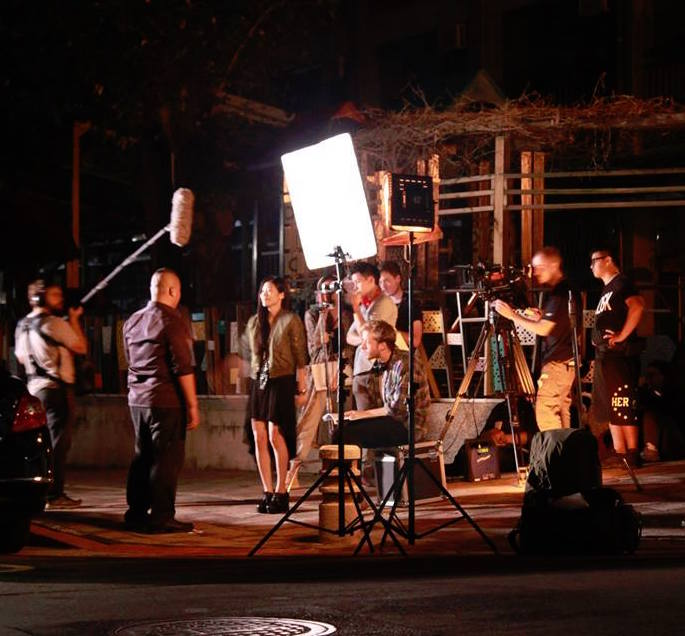

science fiction | english-mandarin | 76 mins
"Under the elusive name 'Made In Taiwan', experimental film maker Jack invents an exciting type of film, which induces a high in the viewer and becomes an underground phenomenon throughout Taipei. With the help of Amy Lin, organised screenings pop up around the city and crowds of eager MIT fans flood in to see each of his newest creations. As his films become more and more popular, Jack fights obsessively to keep complete control of his product. He also comes to realize that his films have some lasting effects on the mind, and, with constant exposure to the films, Jack slides into a dark, dream world of his own creation that he may never return from..."
PRODUCTION
'Made In Taiwan' was shot on location in Taipei over one month.
The film was a joint collaboration between a British / Taiwanese crew.
AWARDS